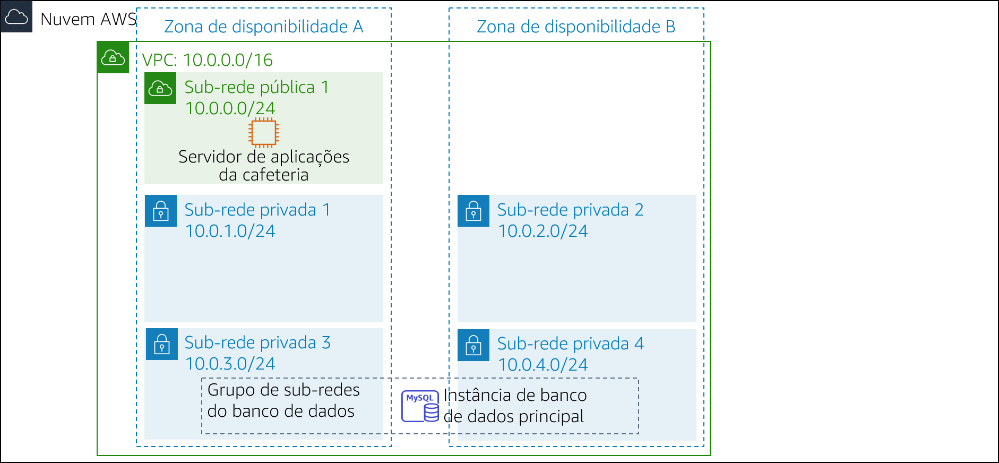
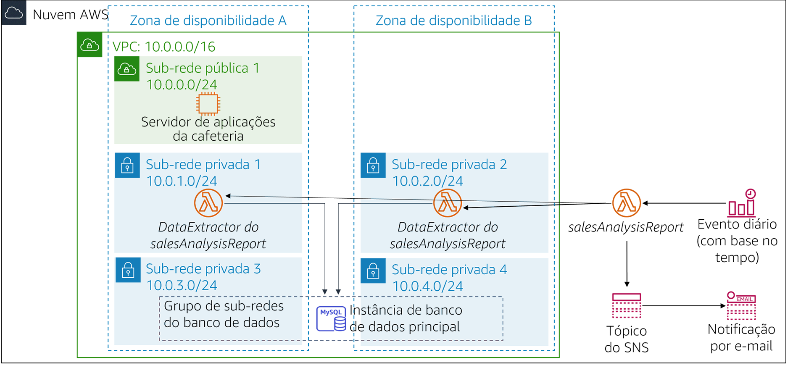

A cafeteria está prosperando. Frank e Martha querem obter relatórios diários de vendas para produtos que são vendidos no site da cafeteria. Eles usarão esse relatório para planejar pedidos de ingredientes e monitorar o impacto das promoções de produtos.
A ideia inicial de Sofía e Nikhil é usar uma das instâncias do servidor Web do Amazon Elastic Compute Cloud (Amazon EC2) para gerar o relatório. Sofía configura um trabalho cron na instância do servidor Web, que envia mensagens de e-mail relatando as vendas diárias. No entanto, o trabalho cron reduz a performance do servidor Web porque ele usa muitos recursos.
Nikhil comenta com Olivia sobre o trabalho cron, e como ele reduz a performance da aplicação Web. Olivia aconselha Sofía e Nikhil a separar as tarefas de relatórios não essenciais da instância do servidor Web de produção. Depois que Sofía e Nikhil avaliam as vantagens e desvantagens da abordagem atual, eles decidem que não querem comprometer a velocidade do servidor Web. Eles também consideram executar uma instância do EC2 separada, mas estão preocupados com o custo da execução de uma instância 24 horas por dia, quando ela é necessária somente por um curto período a cada dia.
Sofía e Nikhil decidem que a execução do código de geração de relatório como uma função do AWS Lambda é uma boa ideia, que também reduzirá os custos. O relatório em si pode ser enviado para Frank e Martha via e-mail, por meio do Amazon Simple Notification Service (Amazon SNS).
Neste laboratório, você assumirá o papel de Sofía para implementar o código de relatório diário como uma função do Lambda.
Neste laboratório, você usará o AWS Lambda para criar um relatório de vendas da cafeteria, que será enviado por e-mail todos os dias por meio do Amazon SNS.
Depois de concluir este laboratório, você deverá saber implementar uma arquitetura sem servidor para gerar um relatório diário de vendas que apresente:
Quando você iniciar o laboratório, sua arquitetura será semelhante ao seguinte exemplo:

No fim deste laboratório, a arquitetura deverá ser semelhante ao seguinte exemplo:

Observação: neste laboratório de desafio, não são fornecidas instruções passo a passo para a maioria das tarefas. Você precisa descobrir como concluir as tarefas por conta própria.
Este laboratório levará aproximadamente 90 minutos para ser concluído.
Neste ambiente de laboratório, o acesso aos serviços e ações de serviço da AWS pode estar restrito àqueles necessários para concluir as instruções do laboratório. Você poderá encontrar erros se tentar acessar outros serviços ou executar ações além do que está descrito neste laboratório.
Na parte superior destas instruções, escolha Start Lab (Iniciar laboratório) para iniciar o laboratório.
Um painel Start Lab (Iniciar laboratório) é aberto com o status do laboratório.
Dica: se você precisar de mais tempo para concluir o laboratório, escolha novamente o botão Start Lab (Iniciar laboratório) para reiniciar o cronômetro do ambiente.
Aguarde até que a mensagem Lab status: ready (Status do laboratório: pronto) seja exibida e feche o painel Start Lab (Iniciar laboratório) escolhendo X.
Observação: este laboratório levará aproximadamente 15 minutos para começar.
Na parte superior destas instruções, escolha AWS.
O Console de Gerenciamento da AWS será aberto em uma nova guia do navegador. O sistema fará o seu login automaticamente.
Dica: se uma nova guia do navegador não for aberta, normalmente você verá uma faixa ou um ícone na parte superior do navegador com uma mensagem informando que o navegador está impedindo que o site abra janelas pop-up. Escolha a faixa ou o ícone e escolha Allow pop ups (Permitir pop-ups).
Organize a guia do Console de Gerenciamento da AWS para que ela seja exibida com essas instruções. O ideal é ver as duas guias do navegador ao mesmo tempo, para facilitar o acompanhamento das etapas do laboratório.
Nas próximas tarefas, você assumirá o papel de Sofía para criar e configurar os recursos necessários a fim de implementar a solução de relatórios.
O código para gerar o relatório já está escrito, empacotado e pronto para você implantar no AWS Lambda.
Faça o download dos seguintes arquivos na sua máquina local:
Extraia cada um dos arquivos.zip e examine o conteúdo deles.
As respostas serão gravadas quando você escolher o botão azul Submit (Enviar) no fim do laboratório.
Acesse as perguntas deste laboratório.
Na página que você carregou, responda à primeira pergunta:
Observação: deixe a página da Web de perguntas abertas na guia do navegador, pois você a consultará de novo mais adiante neste laboratório.
Nesta tarefa, você criará a função do Lambda DataExtractor, que extrai os dados de vendas da cafeteria de um banco de dados do Amazon RDS. Para que a função do Lambda possa acessar a instância do banco de dados do RDS, você deve atualizar o grupo de segurança do banco de dados com uma regra para permitir conexões da função do Lambda. Para habilitar essa comunicação, você criará um grupo de segurança para a função do Lambda e o adicionará como uma regra de entrada ao grupo de segurança da instância do RDS.
Crie um grupo de segurança para a função do Lambda com as seguintes configurações:
LambdaSGAtualize o grupo de segurança do DatabaseSG adicionando o novo grupo de segurança da função do Lambda como uma segunda origem à regra existente da porta de entrada TCP 3306.
Crie uma função do Lambda com as seguintes configurações:
Function name (Nome da função): salesAnalysisReportDataExtractor
Runtime (Tempo de execução): Python 3.8
Role (Função): salesAnalysisReportDERole
VPC:
Dica: a criação da função levará alguns minutos
Configure a função do Lambda DataExtractor da seguinte forma:
função do Lambda para extrair dados do banco de dadossalesAnalysisReportDataExtractor.lambda_handler30Retorne à guia do navegador com as perguntas de múltipla escolha deste laboratório e responda à seguinte pergunta:
Nesta tarefa, você criará a função do Lambda que gera e envia o relatório diário da análise de vendas.
Crie uma segunda função do Lambda com as seguintes configurações:
salesAnalysisReportConfigure a função do Lambda salesAnalysisReport da seguinte forma:
função do Lambda para gerar e enviar o relatório diário de vendassalesAnalysisReport.lambda_handler30O relatório de análise de vendas usa um tópico do SNS para enviar o relatório aos assinantes por e-mail. Nesta tarefa, você criará um tópico do SNS e atualizará as variáveis de ambiente da função do Lambda salesAnalysisReport para armazenar o nome de recurso da Amazon (ARN) do tópico.
Crie um tópico padrão do SNS com a seguinte configuração:
SalesReportTopictópico do relatório de vendasAtualize a função do Lambda salesAnalysisReport adicionando a seguinte variável de ambiente:
topicARNRetorne à guia do navegador com as perguntas de múltipla escolha deste laboratório e responda à seguinte pergunta:
Para receber o relatório de vendas por e-mail, você deve criar uma assinatura de e-mail para o tópico criado na tarefa anterior.
Crie uma nova assinatura de e-mail para o tópico. Use um endereço de e-mail que você possa acessar facilmente para este laboratório.
Confirme a assinatura no seu cliente de e-mail. Observação: se você não receber uma confirmação por e-mail, verifique sua pasta Lixo ou Spam.
Retorne à guia do navegador com as perguntas de múltipla escolha deste laboratório e responda à seguinte pergunta:
Antes de criar o evento diário de relatórios, você deve testar se a função do Lambda salesAnalysisReport funciona corretamente.
Crie um teste para a função do Lambda salesAnalysisReport.
Dica: você não precisa se preocupar com parâmetros, portanto insira um nome de evento e aceite o evento de teste
hello-worldpadrão.
Execute o teste salesAnalysisReport. Se o teste for bem-sucedido, você terá um relatório de e-mail em alguns minutos.
Se a execução do teste da função do Lambda falhar, use os logs para revisar quaisquer erros, resolva-os e execute o teste novamente. Aqui estão algumas dicas de solução de problemas que você pode tentar:
Revise os logs do Amazon CloudWatch Logs para ambas as funções Lambda:
Revise seu trabalho para ter certeza de que concluiu todas as etapas.
Vá para a seção Enviar o trabalho e siga as etapas para enviar seu trabalho. O relatório de envio mostrará se você concluiu as etapas anteriores corretamente.
O último passo neste desafio é configurar um trigger que executará o relatório todos os dias.
Dica: se você não conseguir avançar, consulte os exemplos de expressão cron na Documentação da AWS. Dica: use uma hora próxima da hora atual, mas lembre-se de que especificá-la em Horário Universal Coordenado (UTC)!
Verifique seu e-mail para ver se o relatório foi enviado.
Retorne à guia do navegador com as perguntas de múltipla escolha deste laboratório e responda à seguinte pergunta:
Depois de testar o relatório, Sofía cria uma assinatura de e-mail para Frank e Martha. Frank e Martha estão ansiosos para receber o primeiro relatório diário da solução sem servidor.
Sofía está satisfeita com a automatização dos relatórios de vendas para a cafeteria, o que continuará a ajudar Frank e Martha a analisar as vendas diárias e planejar o inventário da cafeteria. Ela também está feliz por ter aprendido como usar o AWS Lambda, o Amazon SNS e o Amazon EventBridge. Na verdade, Sofía planeja implementar mais recursos de relatórios automatizados e sem servidor na aplicação Web da cafeteria para ajudar na expansão e na gestão dos negócios.
Na parte superior destas instruções, escolha Submit (Enviar) para gravar seu progresso e, quando solicitado, escolha Yes (Sim).
Se os resultados não forem exibidos após alguns minutos, volte ao topo destas instruções e escolha Grades (Notas).
Dica: você pode enviar seu trabalho várias vezes. Depois de alterar o trabalho, escolha Submit (Enviar) novamente. Seu último envio é o que será gravado para este laboratório.
Para ver o feedback detalhado do seu trabalho, escolha Details (Detalhes) e depois View Submission Report (Visualizar relatório de envio).
Parabéns! Você concluiu o laboratório.
Para confirmar que você deseja encerrar o laboratório, escolha End Lab (Encerrar laboratório) na parte superior desta página e selecione Yes (Sim).
Será exibido um painel com a mensagem: DELETE has been initiated... You may close this message box now. (A EXCLUSÃO foi iniciada... Você pode fechar esta caixa de mensagem agora).
Escolha o X no canto superior direito para fechar o painel.
©2020, Amazon Web Services, Inc. e suas afiliadas. Todos os direitos reservados. Este trabalho não pode ser reproduzido ou redistribuído, no todo ou em parte, sem permissão prévia por escrito da Amazon Web Services, Inc. É proibido copiar, emprestar ou vender para fins comerciais.